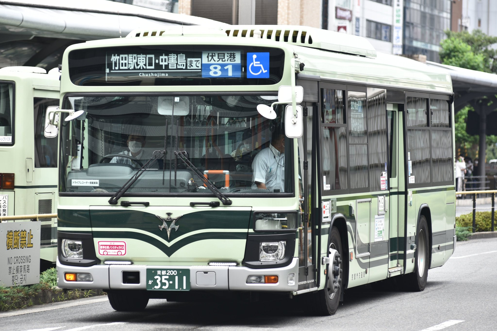
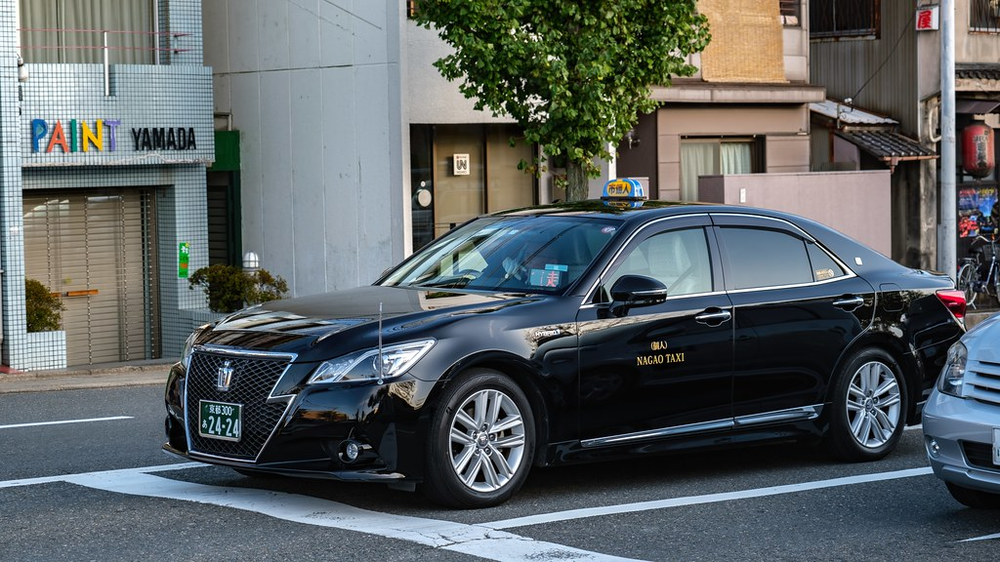
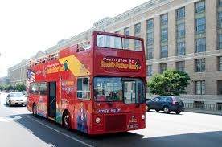
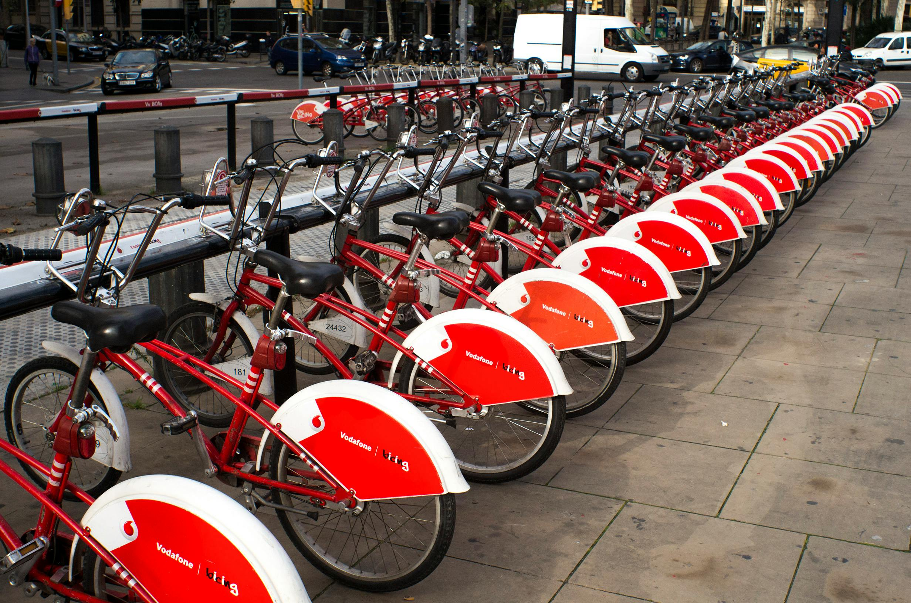

Moyen de transports, Kyoto
| Image |
Nom |
Prix |
Trajet effectuable |
|  |
Bus |
Les bus ont une zone tarifaire forfaitaire de 230 yen par trajet, soit 1,36 Euro. En dehors de cette zone, le prix augmente avec la distance |
Deux bus sont disponibles, les verts qui sont nombreux est plus utiles et les rouges qui sont pratique pour accéder aux sites touristiques des zones plus éloignées de la ville. Les deux on des lignes de bus lié à la gare de Kyoto et plusieurs sites touristiques et/ou endroits de la ville différents |
|  |
Taxi |
prix commence à 610 yen pour les deux premiers kilomètres et augmente de 80 yen chaque 300-400 metres voyagé |
Partout dans la ville à petite ou moyennes distances, selon votre choix |
|  |
Bus touristique |
un pass de 12 heures coûtant 2500 yen et un pass de 24 heures a 3600 yen sont disponibles |
C'est un moyen cher mais pratique pour visiter les sites touristiques les plus populaires de la ville de Kyoto |
 |
Métro |
Prix de base à 220 yen avec un maximum de 360 yen en fonction de la distance |
Deux ligne de métro sont disponibles, la ligne Karasuma qui s'étend du sud au nord le long de Karasuma-dori et s'arrête à la gare JR de Kyoto, et la nouvelle ligne Tozai qui s'étend d'est en ouest et rencontre la ligne Karasuma à l'intersection de Karasuma-dori et d'Oike-dori |
 |
Chemin de fer |
En fonction de la distance comme avec le métro, avec un prix qui varie entre 210 et 350 yen |
Toutes les lignes JR, y compris le Tokaido Shinkansen, passent ou partent de la gare JR de Kyoto. Les trains JR peuvent être pratiques pour accéder à la région d'Arashiyama (ligne JR Sagano) et à certaines attractions du sud de Kyoto le long de la ligne JR Nara, par exemple, Le sanctuaire Fushimi Inari et Uji |
|  |
Vélos |
Les frais typiques pour un vélo basique sont de 1000-1500 yen, pour un vélo électrique c'est au alentours de 1700-2000 yen |
C'est un bon moyen pour traverser la ville et/ou se balader suite à leurs routes plaines et layout simple de la ville |

{kind=link}
{kind=link}
{kind=link}
{kind=link}